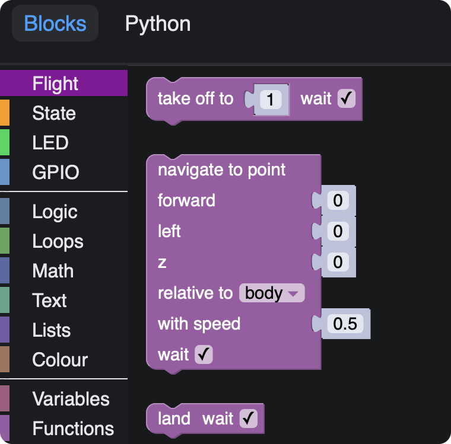
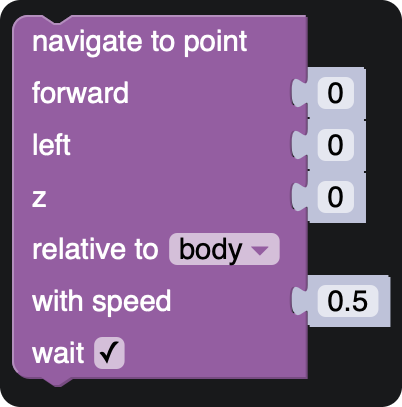

Блочное программирование
Блочное программирование позволяет составлять программы для дрона, используя наглядные функциональные блоки. Такой подход значительно упрощает работу с Technic. Не имея опыта в программировании, вы сможете из блоков построить задание, и выполнить это задание, запустив дрон.
Конфигурация
Для корректной работы работы блочного программирования аргумент blocks в launch-файле Technic (~/technic_ws/src/technic/technic/launch/technic.launch) должен быть в значенииtrue:
<arg name="blocks" default="true"/>
Запуск
Для того, чтобы открыть интерфейс блочного программирования в Tehcnic, подключитесь к Technic по Wi-Fi и перейдите на страницу http://10.42.0.1:8000/technic_blocks/ либо нажмите ссылку Blocks programming на основной веб-странице Technic.
Интерфейс выглядит следующим образом:

Соберите необходимую программу из блоков в меню слева а затем нажмите кнопку Run для ее запуска. Также вы можете просмотреть сгенерированный код на языке Python, переключившись во вкладку Python.
Кнопка Stop позволяет остановить программу. Нажатие кнопки Land также останавливает программу и сажает дрон.
Сохранение и загрузка
Для сохранения программы откройте меню справа сверху, выберите пункт меню Save и введите название программы. Название программы может содержать только латинские буквы, дефис, подчеркивание и точку. Все ранее сохраненные программы будут доступны в этом же меню.
На карте памяти сохраненные XML-файлы программ хранятся в каталоге /technic_ws/src/technic/technic_blocks/programs/.
В этом же меню доступны примеры программ (подкаталог examples).
Блоки
Набор блоков приблизительно аналогичен набору ROS-сервисов API автономных полетов Technic. В этом разделе приведено описание некоторых из них.
Блоки Клевера поделены на 4 категории:
- Flight – команды, имеющие отношение к полету.
- State – блоки, позволяющие получить те или иные параметры текущего состояния коптера.
- LED – блоки для управления LED-лентой.
- GPIO – блоки для работы с GPIO-пинами.
В остальных категориях находятся стандартные блоки Google Blockly.
take_off
Взлететь на указанную высоту в метрах. Высота может быть произвольным блоком, возвращающим числовое значение.
Флаг wait определяет, должен ли дрон ожидать окончания взлета перед выполнением следующего блока.
navigate

Прилететь в заданную точку. Координаты точки задаются в метрах.
Флаг wait определяет, должен ли дрон ожидать завершения полета в точку перед выполнением следующего блока.
Поле relative to
В блоке может быть выбрана система координат, в которой задана целевая точка:
- body – координаты относительно коптера: вперед (forward), влево (left), вверх (up).
- markers map – система координат, связанная с картой ArUco-маркеров.
- marker – система координат, связанная с ArUco-маркером; появляется поле для ввода ID маркеа.
- last navigate target – координаты относительно последней заданной точки для навигации.
- global – глобальная система координат (широта и долгота) и относительная высота.
- global, WGS 84 alt. – глобальная система координат и высота в системе WGS 84.
land
Произвести посадку.
Флаг wait определяет, должен ли дрон ожидать окончания посадки перед выполнением следующего блока.
wait
Ожидать заданное время в секундах. Время ожидания может быть произвольным блоком, возвращающим числовое значение.
wait_arrival
Ожидать, пока дрон долетит до целевой точки (заданной в navigate-блоке).
Работа с GPIO
Категория GPIO содержит блоки для работы с GPIO. Обратите внимание, что для корректной работы этих блоков демон для работы с GPIO pigpiod должен быть включен:
sudo systemctl enable pigpiod.service
sudo systemctl start pigpiod.service
Более подробную информацию о GPIO читайте в соответствующей статье.